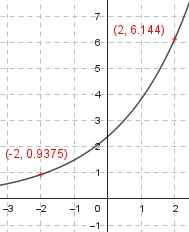

Aufgabe 21 Wie lautet die Funktionsgleichung einer Funktion der Form y = q*ax, wenn sie durch die Punkte (2|6,144) und (-2|0,9375) geht? y = q * ax x1 = 2 , y1 = 6,144 x2 = -2 , y2 = 0,9375 eingesetzt : 6,144 = q * a2 (1) 0,9375 = q * a-2 (2) Aus (2) : 0,9375 = q * a-2 q 0,9375 = ---- | *a2 a2 q = a2 * 0,9375 In (1) eingesetzt : 6,144 = 0,9274 * a2 * a2 6,144 = 0,9274 * a4 | :0,9375 a4 = 6,5536 a = a = ± 1,6 In (1) eingesetzt: 6,144 = q * 1,62 6,144 = q * 2,56 | :2,56 q = 1,6 y = 2,4 * 1,6x q = -1,6 ist keine Lösung, da eine alternierende Zahlenfolge, mal positiv mal negativ, entsteht. 2.4 * (-1,6)2 = positives Ergebnis 2,4 * (-1,6)3 = negatives Ergebnis usw.
